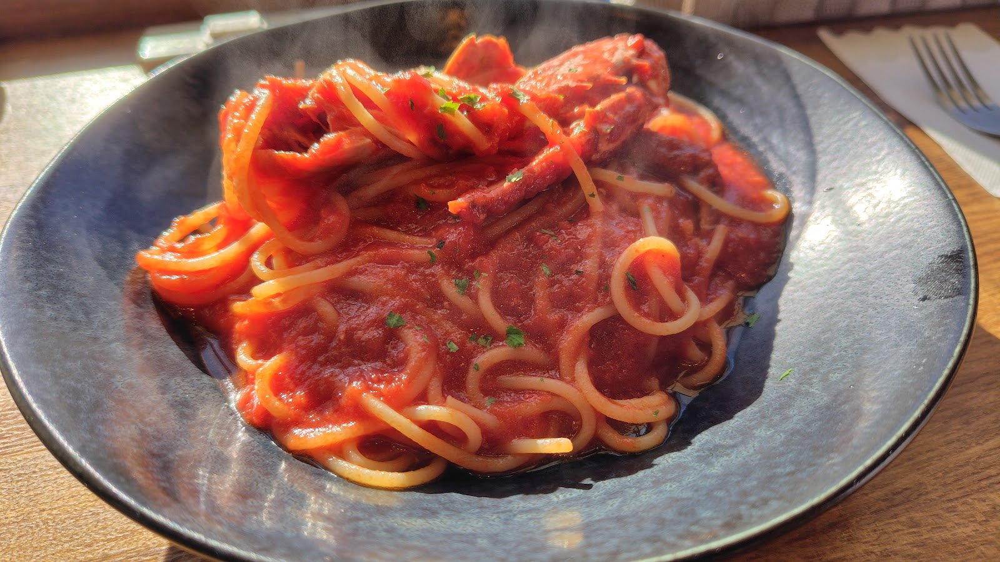

★★★★★
3 か月前
気軽に入れるイタリアン
料理も美味しく、軽くでもパーティでも。
カウンターもあり、一人でも。

Photo: Yox WagPrezzaは、我孫子駅北口エリアのパンデイズ我孫子内にあるイタリアンダイニングです。
木の質感を活かした店内で、前菜からパスタ、ピザまでイタリア料理の定番を気負わず楽しんでいただけます。
店の雰囲気や過ごし方については、こだわりのページで詳しくご紹介しています。
こだわりを見るVoice
Googleマップに投稿された、Prezzaへのクチコミをそのまま掲載しています。
気軽に入れるイタリアン
料理も美味しく、軽くでもパーティでも。
カウンターもあり、一人でも。
細い階段を上がった2階です。
昔はパン屋さんが入っていましたが、今は一階が美容室、2階がプレッツァ。
大きな窓が開放感有ります。
カウンター席、テーブル席2卓。
日曜日もランチセット有り。
サラダは新鮮。
ワタリガニのパスタ、新玉ねぎとベーコンのパスタともにトマトが効いた程よい酸味のある美味しいソースでした。
ピザのテイクアウトを取りに来ているお客さんがいました。
シェフ、店員さんともにフレンドリーでとても感じ良かったです。
次はピザを食べに来ます！
ホットペッパーグルメで予約
階段登りコート掛けや膝掛けがあり
テーブルにはシルバーセットされていておもてなしを感じました！
西陽が差し込むとスタッフがブラインドを下げたりと配慮されてます。
今月は1000円台のピザがキャンペーンで500円と安くなっておりランチメニューと一緒にいただきました!
どちらもとても美味しかったです！
テーブルチェックでスタッフ一同、笑顔でのお見送りでとても気分が良かったです。
>
ランチセット：ボローニャ風ミートソーススパゲッティー サラダ&ドリンク付き
>
とっても美味しかったです！
サラダとドリンク付きで1480円は割とお手頃なのではないでしょうか。
パスタはぱっと見量が少ないように見えましたが、実際に食べてみると結構満腹になります。
何より麺がモチモチしていて美味しいです。
>
オープンしたてということもあり、スタッフ側がバタバタしていました。
あとランチのメニューが以下の通りなのですが…
①ワタリガニのトマトソーススパゲッティー
②ボローニャ風ミートソーススパゲッティー
③ナポリタン
全部トマト系なのが気になりました。
これだとトマト系のパスタが食べたい！という口でないと、自然と店選びの選択肢から除外されてしまうのでは…？
メニューのバリエーションがもっとあったらいいなと感じました。
このあたりは今後に期待ですね。
>
私が店に訪れた時(2/11)は支払いが現金のみでしたが、1週間後くらいにQR決済の機材が届くとシェフの方がおっしゃっていました。
軽くでもディープにでも寄りやすい雰囲気のイタリアン。気さくなマスターと1人飲みにも行きやすいお店です。
どの世代でも行きやすいレストランだと思います。
カニのパスタは絶品です！
とりあえずそれを頼んでおけばいいと思います！！